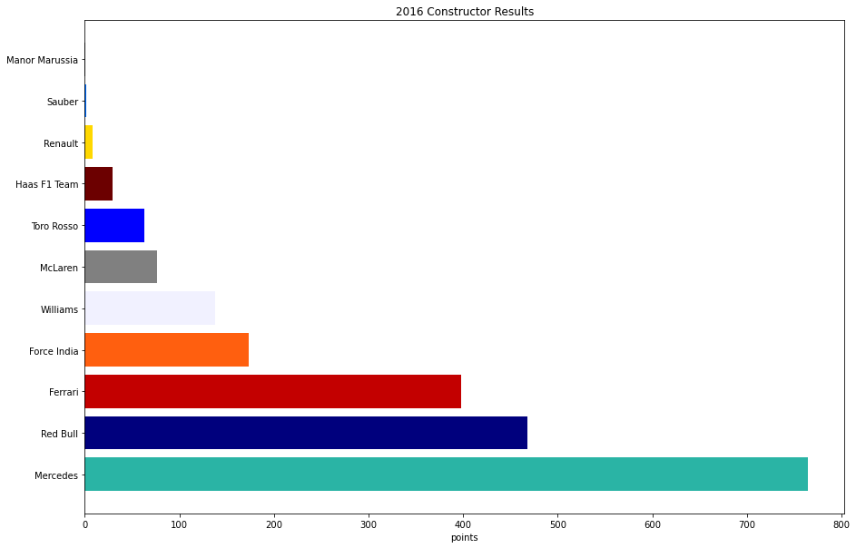
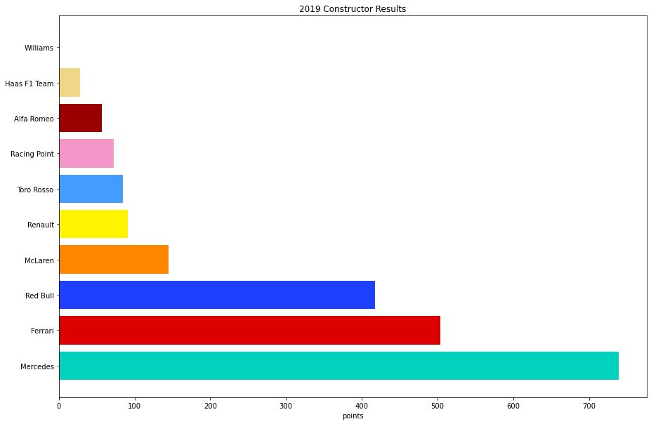

Summary:
The purpose of this project was to demonstrate how Mercedes has dominated the last 8 years in Forumla One.
The data was pulled from Kaggle as csv files. I used a jupyter notebook to import pandas for my data clean up and matplotlib for the plots.
I created dataframes of each year of the Constructor Results and created horizontal bar charts for each. I also made a dataframe of the sum of the years 2014-2021 to show how far ahead Mercedes is currently.
Mercedes in the V6 Turbo-Hybrid Era
credit: wiki
The team finished the 2014 season 296 points ahead of their closest rival Red Bull Racing in the World Constructors' Championship standings. With 18 pole positions, 16 wins and 11 1–2's out of 19 races, Mercedes dominated this first year of the V6 turbo era. For their 16 race victories, the average winning margin to the nearest non-Mercedes competitor was 23.2 seconds.
For the 2015 season, the team retained both Hamilton and Rosberg. At the 2015 Russian Grand Prix the team won their second Constructors' Championship as a works team and Hamilton won his second consecutive Drivers' Championship at the 2015 United States Grand Prix, finishing 59 points ahead of Rosberg. Mercedes continued their domination in this second year of the V6 turbo era, improving on their impressive numbers from 2014 with 18 pole positions, 16 wins and 12 1–2's in 19 races.

In the 2016 season, Mercedes won the Constructors' Championship for the third consecutive season, winning 19 of the 21 races held, while securing 20 poles (the highest percentage ever in a single season of F1 at 95.2%) and 8 1–2's. ... Rosberg won his only Drivers' Championship, finishing 5 points ahead of Hamilton, before announcing his retirement shortly after winning the title.
... On 22 October 2017, Mercedes won the Constructors' Championship for the fourth consecutive time. One week later, Lewis Hamilton became the first British driver to win four world championships. Mercedes finished the 2017 season with 12 wins out of 20 races, 15 poles, 4 1–2's and an average winning margin to the nearest non-Mercedes driver of 13.1 seconds.
... In the 2018 season, Mercedes won 11 races (all for Hamilton) out of 21 races, took 10 fastest laps (three for Hamilton and seven for Bottas), 13 pole positions (eleven for Hamilton and two for Bottas), and four 1-2 finishes. This made Mercedes only the second team in the history in F1 to achieve the feat of winning 5 drivers' and constructors' titles in a row, after Ferrari did so between 2000 and 2004.

For the 2019 season, the team again retained both Hamilton and Bottas. ... By the summer break, Mercedes had won 10 out of 12 races with Hamilton taking 8 victories to Bottas's 2, securing 1-2 finishes at the first 5 races of the season. The team would go on to take the both the drivers and constructors titles for the sixth consecutive year.
The team debuted their "Dual-Axis-Steering" system during pre-season testing for the 2020 season. ... The system was allowed for the 2020 season, but has been made illegal for 2021. The team would go on to win both the drivers and constructors championships. Before the penultimate round of the season, the 2020 Sakhir Grand Prix, Hamilton was forced to sit the race out following a positive coronavirus test, with Williams driver and Mercedes junior George Russell replacing him.
For 2021, the team retained the same driver line-up for a fifth straight season. The team failed to win the drivers' championship for the first time in the V6 turbo-hybrid era, with Hamilton being overtaken on the last lap of the season-ending Abu Dhabi Grand Prix, after a controversial safety car restart. Hamilton had comfortably led the race and been on course for his eighth title before a late safety car. The actions of FIA race director Michael Masi surrounding the controversial procedures used during the late safety car caused Mercedes to file an intention to appeal the results of that race, though this was later withdrawn. Hamilton finished second in the championship, eight points behind champion Verstappen, with Bottas third in the standings in his final season with the team. The team took the constructors' title for a record-extending eighth consecutive season. George Russell will replace Bottas to partner Hamilton for 2022.
credit: wiki